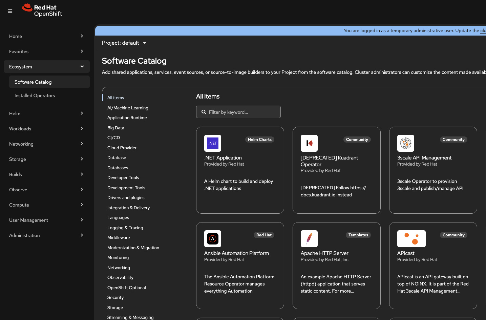
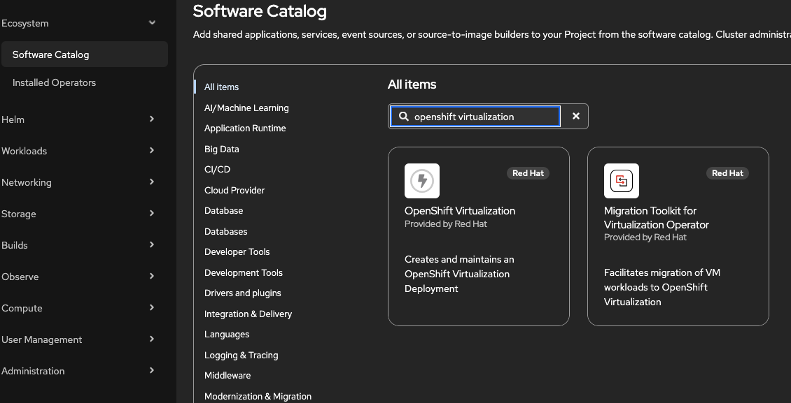
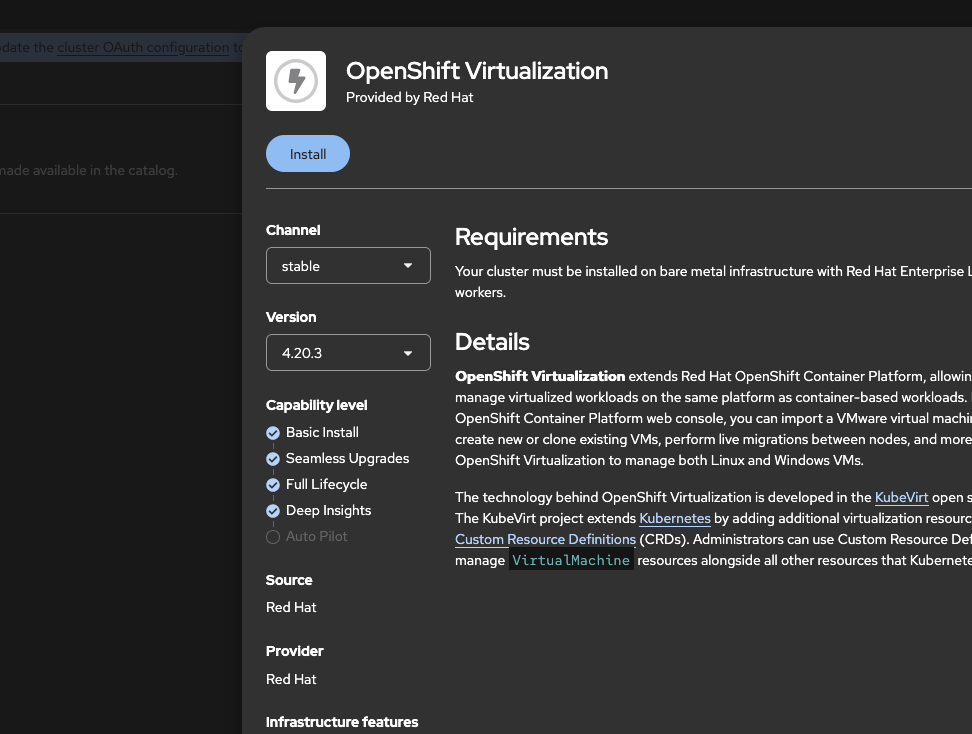
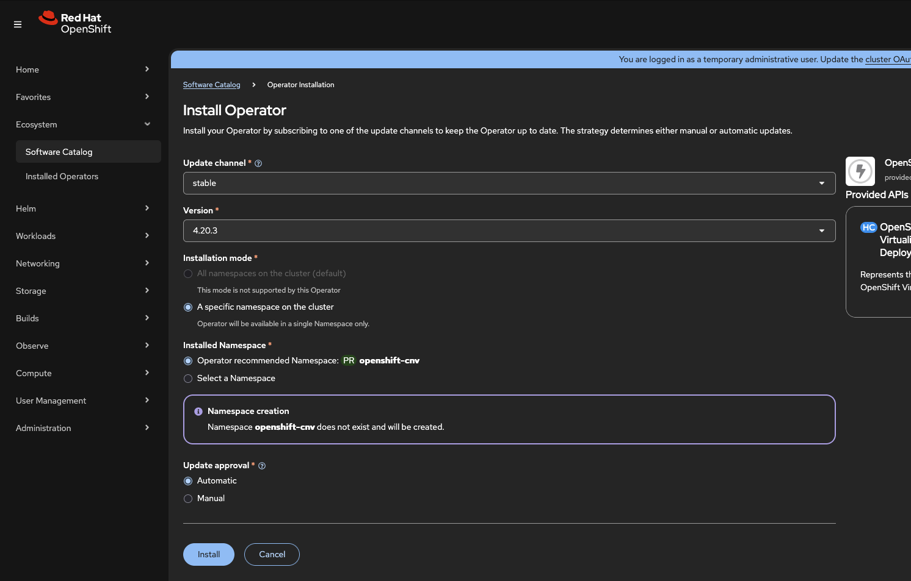

OpenShift Virtualization Operatorのインストールと設定
概要
このチュートリアルでは、OpenShiftクラスター上でコンテナワークロードと並行して仮想マシンを実行できるようにする、OpenShift Virtualizationオペレーターのインストールおよび設定方法を説明します。OpenShift Virtualizationは、アップストリームのKubeVirtプロジェクトをベースにしており、エンタープライズグレードの仮想化機能を提供します。
前提条件
-
OpenShift 4.18+: サポートされているプラットフォーム上でインストールおよび実行されていること
-
クラスター管理者権限: オペレーターのインストールおよびクラスターリソースの設定に必要です
検証済みバージョン:
OpenShift 4.18, 4.19, 4.20, 4.21
ハードウェアおよびソフトウェアの要件
OpenShift Virtualizationをインストールする前に、クラスターがハードウェア、オペレーティングシステム、ストレージ、およびネットワークの要件を満たしていることを確認してください。
CPU仕様、サポート対象プラットフォーム、ストレージに関する考慮事項、リソースオーバーヘッドなどの詳細な要件については、OpenShift Virtualization用のクラスターの準備を参照してください。
| ストレージ設定については、オペレーターのインストール完了後に デフォルトストレージクラスの設定 を参照してください。 |
Webコンソールを使用したインストール
Webコンソールを使用すると、OpenShift Virtualizationのインストールをガイド付きで実行できます。
ステップ 1: OperatorHubへのアクセス
-
cluster-admin権限を持つユーザーとしてOpenShift Webコンソールにログインします。 -
Operators → OperatorHub に移動します。

-
Filter by keyword フィールドに
Virtualizationと入力します。
ステップ 2: オペレーターのインストール
-
Red Hat ソースラベルが付いた OpenShift Virtualization タイルを選択します。
-
オペレーター情報を確認し、Install をクリックします。

-
Install Operatorページで、デフォルト設定のまま Install をクリックします。

| 手動承認（Manual approval）も利用可能ですが、サポートされていないバージョンの組み合わせを実行するリスクがあるため、推奨されません。影響を完全に理解している場合にのみ、Manualを選択してください。 |
-
オペレーターのインストールが完了するまで待ちます。


コマンドラインを使用したインストール
自動デプロイやWebコンソールにアクセスできない環境では、CLIによるインストール方法を使用します。
ステップ 1: Namespace、OperatorGroup、およびSubscriptionの作成
必要なすべてのリソースを含む単一のマニフェストファイルを作成します。
oc apply -f - <<EOF
apiVersion: v1
kind: Namespace
metadata:
name: openshift-cnv
---
apiVersion: operators.coreos.com/v1
kind: OperatorGroup
metadata:
name: kubevirt-hyperconverged-group
namespace: openshift-cnv
spec:
targetNamespaces:
- openshift-cnv
---
apiVersion: operators.coreos.com/v1alpha1
kind: Subscription
metadata:
name: hco-operatorhub
namespace: openshift-cnv
spec:
source: redhat-operators
sourceNamespace: openshift-marketplace
name: kubevirt-hyperconverged
channel: stable
installPlanApproval: Automatic
EOFステップ 2: オペレーターインストールの確認
オペレーターがインストールされるのを待ち、ステータスを確認します。
# Watch the CSV status until it shows Succeeded
oc get csv -n openshift-cnv -wインストール完了時の期待される出力:
NAME DISPLAY VERSION REPLACES PHASE kubevirt-hyperconverged-operator.v4.20.3 OpenShift Virtualization 4.20.3 kubevirt-hyperconverged-operator.v4.20.1 Succeeded
Succeeded と表示されたら Ctrl+C を押して監視を停止します。
ステップ 3: HyperConvergedリソースの作成
HyperConvergedカスタムリソースをデプロイして、インストールを完了します。
oc apply -f - <<EOF
apiVersion: hco.kubevirt.io/v1beta1
kind: HyperConverged
metadata:
name: kubevirt-hyperconverged
namespace: openshift-cnv
spec:
EOF| 上記の最小限のHyperConvergedスペックは、すべてのデフォルト設定を使用します。高度な設定オプションについては、https://docs.openshift.com/container-platform/latest/virt/install/installing-virt.html#virt-customizing-storage-profile_installing-virt[公式ドキュメント,window=_blank]を参照してください。 |
OpenShift Virtualizationのアンインストール
OpenShift Virtualizationをクラスターから削除する必要がある場合は、以下の手順を順番に実行してください。アンインストールプロセスでは、すべての仮想化コンポーネントが安全に停止されるため、数分かかります。
| オペレーターのサブスクリプションを削除するだけでは、デプロイされたリソースは削除されません。すべてのコンポーネントを適切にクリーンアップするには、まずHyperConvergedリソースを削除する必要があります。 |
ステップ 1: すべての仮想マシンの削除
アンインストール前に、すべてのVMが停止および削除されていることを確認してください。
# List all VMs across namespaces
oc get vm -A
# Delete VMs (repeat for each namespace)
oc delete vm --all -n <namespace>| 実行中のVMは、アンインストール中に強制終了されます。 |
ステップ 2: HyperConvergedリソースの削除
このステップで、すべてのOpenShift Virtualizationコンポーネントが削除されます。
oc delete hyperconverged kubevirt-hyperconverged -n openshift-cnvクリーンアップの進行状況を監視します。
# Watch pods being terminated (this may take 5-10 minutes)
oc get pods -n openshift-cnv -wすべてのPodが終了するまで待機してから次に進みます。
次のステップ
-
virtctlの基本を学習する - VM管理用のコマンドラインツール
-
デフォルトストレージの設定 - VM用ストレージのセットアップ
-
VM用の静的IP設定 - cloud-init、DHCP予約、ゲストエージェント、およびSysprepを使用した静的IP設定